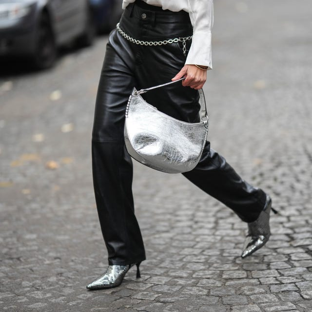

Balletcore
Metallics
The year 2023 was a fusion of hyper-feminine and futuristic aesthetics. Balletcore emerged as a major movement, bringing delicate wrap tops, leg warmers, and pastel shades into everyday wear. Meanwhile, denim and metallics saw a resurgence, with full-denim looks and shiny statements making waves.
Denim on Denim
Statement Accessories